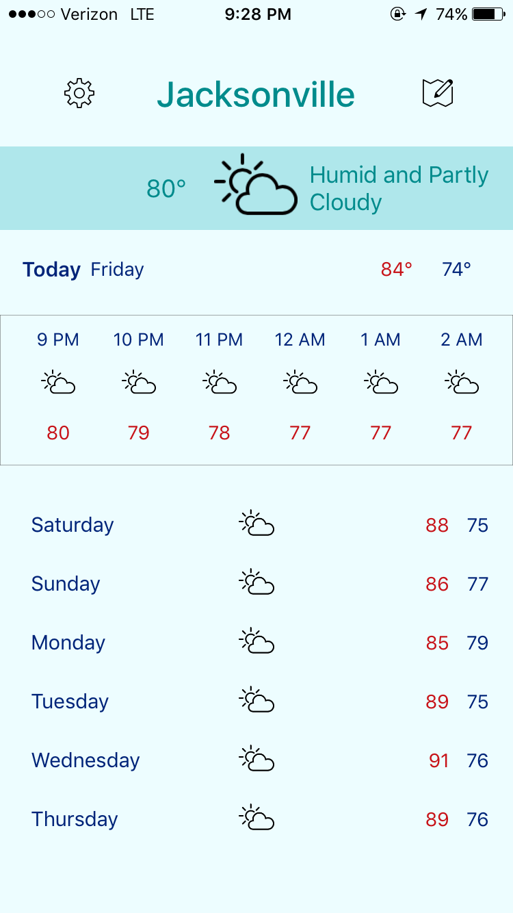

About Me
Hi, I'm Mitchell! I am currently a third-year computer science and engineering student
at The Ohio State University. This past summer I spent my time working as a software engineer
intern at American Chemical Society, continuing to improve my software development skills. I love
coding because it allows me the freedom to create almost anything that comes to mind.
While I'm not in front of a computer, some of my favorite hobbies are playing soccer, biking, cooking, and making coffee. I have an espresso machine at home that I use to experiment with different variations of lattes, macchiatos, and more. Alongside the dream of being a successful software engineer, another goal of mine is to open my own coffee shop one day!

Education
THE OHIO STATE UNIVERSITY
COMPUTER SCIENCE AND ENGINEERING • SOFTWARE DEVELOPMENT
I am studying computer science and engineering at The Ohio State University. Here I have gained strong knowledge of a wide variety of subjects including software development, data structures, and networking. I will be continuing to grow and further improve these skills over the next year.
Graduation: December 2020
Experience
SOFTWARE ENGINEER INTERN
AMERICAN CHEMICAL SOCIETY
MAY 2019 - AUGUST 2019
COLUMBUS, OH
▪ Full-stack web development in Spring on existing web applications used by ACS customers worldwide.
▪ Developed ETL mappings using Pentaho to extract data from multiple source systems into one common data model.
▪ Developed and executed test plans for developed solutions.
STUDENT TECHNICIAN
THE OHIO STATE UNIVERSITY
AUGUST 2018 - DECEMBER 2018
COLUMBUS, OH
▪ Provided desktop support services including software installation, network troubleshooting, and printer setup
for Ohio State faculty.
▪ Discovered a simple solution to a major problem that was crashing all university-owned Macs after a software
update.
SOFTWARE TEST AUTOMATION ENGINEER INTERN
IMOBILE3 (ACQUIRED BY TSYS)
MAY 2018 - AUGUST 2018
JACKSONVILLE, FL
▪ Coded automated test cases in Java using Selenium and Appium to ensure POS and Marketplace project
features were properly functioning.
▪ Improved efficiency of automated test case suite by over 200% for POS project.
▪ Cut the regression test phase in half by converting 80% of the manual test cases.
Projects
Dash App
NODE.JS ▪ HANDLEBARS ▪ MONGODB ▪ PHASER ▪ DOCKER ▪ BOOTSTRAP ▪ GITLAB


▪ Worked on a small team to develop an interactive Express web application to track company cat named ‘Dash’.
▪ Users can submit sightings, view recent and top sightings, look at pictures in a gallery, and play Dash-themed Pong.
iOS Weather App
SWIFT ▪ XCODE ▪ RESTFUL API ▪ JSON ▪ GITHUB


▪ Developed iOS application using Swift and Xcode that allows users to check the weather of their current
location or that of a zip code entered.
▪ Utilized Dark Sky weather API and decoded JSON data to implement accurate weather.
PERSONAL WEBSITE
HTML ▪ CSS ▪ JAVASCRIPT ▪ GITHUB

▪ Developed personal website to display both personal and professional details about myself.
TAG CLOUD GENERATOR
JAVA ▪ HTML ▪ GITHUB
▪ Developed a Java application that takes a text file of words as input, and creates an HTML page with a formatted cloud of these words.